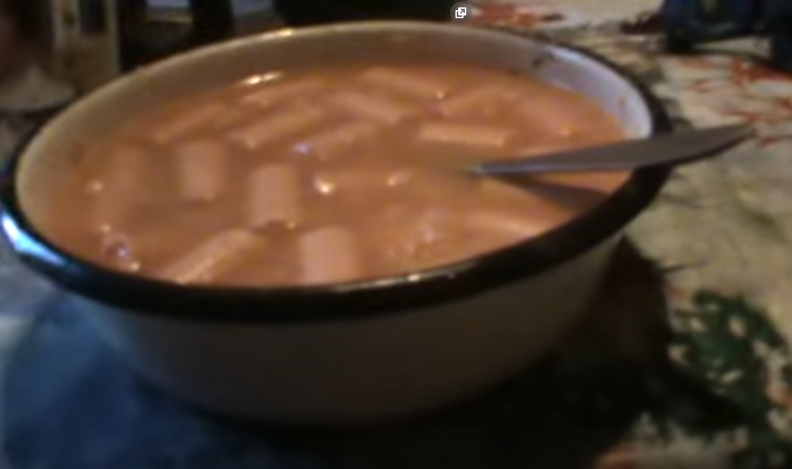

Zupka kińska z porówkami

Opis
Zupka kińska z porówkami - Prosta potrawa kuchni bombaskiej dla biednych, która swego czasu stanowiła trzon diety Kolanosceptyka.
Składniki
- zupka kińska o wybranym smaku
- porówki
Wykonanie
- otwieramy zupkę chińską (bez krzuszenia makaronu) i wrzucamy zawartość do psiej miski (sugerowany smak zupki to rosół, ale pełna dowolność)
- wysypujemy bazę smakową, czyli ten proszek na danie
- kroimy uznaną ilość parówek po czym wrzucamy do środka
- zalewamy wrzątkiem i mieszamy łyżką by na koniec psznie spożywać
Wstecz